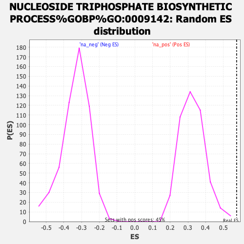

| | | Dataset | ER_ranked_genelist |
| Phenotype | NoPhenotypeAvailable |
| Upregulated in class | na_pos |
| GeneSet | NUCLEOSIDE TRIPHOSPHATE BIOSYNTHETIC PROCESS%GOBP%GO:0009142 |
| Enrichment Score (ES) | 0.5746094 |
| Normalized Enrichment Score (NES) | 1.7615929 |
| Nominal p-value | 0.0 |
| FDR q-value | 0.32301024 |
| FWER p-Value | 0.996 |
Table: GSEA Results Summary
 Fig 1: Enrichment plot: NUCLEOSIDE TRIPHOSPHATE BIOSYNTHETIC PROCESS%GOBP%GO:0009142
Fig 1: Enrichment plot: NUCLEOSIDE TRIPHOSPHATE BIOSYNTHETIC PROCESS%GOBP%GO:0009142
Profile of the Running ES Score & Positions of GeneSet Members on the Rank Ordered List
| SYMBOL | RANK IN GENE LIST | RANK METRIC SCORE | RUNNING ES | CORE ENRICHMENT | | 1 | PGK1 | 1 | 10.262 | 0.1777 | Yes |
| 2 | PKM | 53 | 4.886 | 0.2583 | Yes |
| 3 | HK1 | 80 | 4.309 | 0.3309 | Yes |
| 4 | ENO2 | 275 | 2.851 | 0.3652 | Yes |
| 5 | PFKP | 376 | 2.418 | 0.3994 | Yes |
| 6 | CAD | 418 | 2.264 | 0.4354 | Yes |
| 7 | DTYMK | 767 | 1.599 | 0.4361 | Yes |
| 8 | NUDT2 | 781 | 1.588 | 0.4625 | Yes |
| 9 | STOML2 | 885 | 1.443 | 0.4795 | Yes |
| 10 | CMPK1 | 966 | 1.368 | 0.4970 | Yes |
| 11 | IMPDH2 | 1053 | 1.284 | 0.5126 | Yes |
| 12 | TGFB1 | 1059 | 1.276 | 0.5343 | Yes |
| 13 | FOXK2 | 1242 | 1.122 | 0.5396 | Yes |
| 14 | TPI1 | 1255 | 1.112 | 0.5579 | Yes |
| 15 | ALDOC | 1297 | 1.079 | 0.5734 | Yes |
| 16 | HK2 | 1708 | 0.818 | 0.5558 | Yes |
| 17 | ENO3 | 1814 | 0.765 | 0.5609 | Yes |
| 18 | PFKM | 1905 | 0.716 | 0.5663 | Yes |
| 19 | NME2 | 2124 | 0.623 | 0.5602 | Yes |
| 20 | ENO4 | 2147 | 0.613 | 0.5691 | Yes |
| 21 | CTPS1 | 2338 | 0.530 | 0.5635 | Yes |
| 22 | AK8 | 2386 | 0.515 | 0.5688 | Yes |
| 23 | PGAM2 | 2424 | 0.502 | 0.5746 | Yes |
| 24 | GAPDHS | 2825 | 0.381 | 0.5502 | No |
| 25 | FOXK1 | 3650 | 0.215 | 0.4899 | No |
| 26 | AK1 | 3729 | 0.203 | 0.4874 | No |
| 27 | PGM1 | 3773 | 0.195 | 0.4874 | No |
| 28 | CTPS2 | 4245 | 0.130 | 0.4531 | No |
| 29 | PFKFB1 | 4857 | 0.058 | 0.4067 | No |
| 30 | PFKFB2 | 5443 | 0.002 | 0.3613 | No |
| 31 | AK7 | 6356 | -0.084 | 0.2920 | No |
| 32 | ALDOA | 6746 | -0.124 | 0.2640 | No |
| 33 | AK3 | 7408 | -0.194 | 0.2160 | No |
| 34 | AK9 | 7650 | -0.224 | 0.2012 | No |
| 35 | IMPDH1 | 8115 | -0.283 | 0.1701 | No |
| 36 | PGAM1 | 8819 | -0.389 | 0.1223 | No |
| 37 | AK4 | 9214 | -0.461 | 0.0997 | No |
| 38 | ADPGK | 9708 | -0.557 | 0.0710 | No |
| 39 | GPI | 9926 | -0.606 | 0.0647 | No |
| 40 | PRKAG2 | 10308 | -0.698 | 0.0472 | No |
| 41 | LDHA | 10849 | -0.864 | 0.0203 | No |
| 42 | ENO1 | 11417 | -1.089 | -0.0049 | No |
| 43 | GAPDH | 11691 | -1.230 | -0.0048 | No |
| 44 | CMPK2 | 11788 | -1.287 | 0.0101 | No |
| 45 | VPS9D1 | 11833 | -1.319 | 0.0295 | No |
| 46 | SLC25A13 | 11900 | -1.376 | 0.0482 | No |
| 47 | PFKL | 12326 | -1.828 | 0.0469 | No |
Table: GSEA details [plain text format]

Fig 2: NUCLEOSIDE TRIPHOSPHATE BIOSYNTHETIC PROCESS%GOBP%GO:0009142: Random ES distribution
Gene set null distribution of ES for NUCLEOSIDE TRIPHOSPHATE BIOSYNTHETIC PROCESS%GOBP%GO:0009142